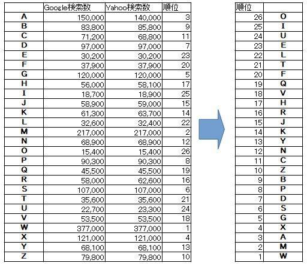

| 「Ｙの悲劇」に挑戦した悲劇: ミステリーファンに贈る PowerBIで見える化した「〇の悲劇」のポイントとアクションとは | |
| 和韻 春 | |
| (2019) | |
Power BIで見える化した「〇の悲劇」のポイントと
次のアクションとは？
はじめに
本書は２つの主題がある。１つは、「〇の悲劇」を俯瞰してみること。2つ目は、俯瞰した結果をPower BIで見える化してアクションを起こすことです。
1つ目の主題について：「〇の悲劇」と言えば、ミステリーファンならば、100人のうち99人は、エラリー・クイーンの「Yの悲劇」と答えるでしょう。そのような人のうんちくのネタになれば幸いです。ただし、映画になった夏木静子の（薬師丸ひろ子の主演）「Wの悲劇」と答える人もいるでしょう。そんな方でも「Yの悲劇」がベースになっていることが分かっていただければと思います。
「Yの悲劇」をリスペクト？オマージュ？して、いろんな「〇の悲劇」が作成されています。ミステリー作家は誰もが「〇の悲劇」に挑戦したいと考えているのではと思います。しかし、必ず「Ｙの悲劇」と比較されるため躊躇しているのでは？。しかし、それにも負けず執筆された「〇の悲劇」にどの様なものがあるか調べたの本書です。
「Ｙの悲劇」のウンチクを語るときのネタにしてもらえばと思います。
本書「『Ｙの悲劇』に挑戦した悲劇」は、「Aの悲劇、Bの悲劇、Cの悲劇・・・・・、Zの悲劇」を意味しており、これらを読破し、その私なり導入文およびYの悲劇との対比などを書いてみました。（あらすじは、Wiki等で調べればわかりますので省略します）
あくまで、私見です。
なおネタばれはしてませんので、安心して読んでください。
「〇の悲劇」として、「ＡからＺすべてあるのか？」「異なる著者で同一タイトルがあるのか」などを検索エンジンで調べてみました。その結果を、Power BIで見える化しました。
二つ目の主題について：「Power BIは単なる見える化ツールではなく、次のアクションを決めるためのツールである」と日頃から感じています。そこで、今回は、たくさんある「〇の悲劇」を俯瞰してみました。まずは読む順をPower BIで決めた後、そこに隠されたキーとして、殺害される人数は？。「〇」に関連した「〇」の個数（例えば、「Ｙの悲劇」は、推理小説の主人公の「Ｙ」と「ヨーク・ハッター」の2個）は何個？なども合わせて見える化しました。そこから、導かれる「〇の悲劇」の正攻法も考え、アクションも起こしてみました。
私見、本書の最初のタイトルは「Ａ-Zの悲劇」でした。しかし、本書を書くために、それぞれの本を読んでみて、やはり、「Ｙの悲劇」がベストでした。その結果、タイトルが、「『Ｙの悲劇』に挑戦した悲劇」に替えました。
目次
Power BIで見える化とアクション
ヒット数
GoogleとYahooで。"Ｙの悲劇"のようにキーワード検索し、Ｘ軸にGoogleの検索ヒット数、Ｙ軸にYahooの検索ヒット数、バブルの大きさは各検索ヒット数の和とし、Power BIで見える化しました(2019年6月某日調べ）。なお、GoogleとYahooの検索結果はほぼ同じでした（YahooはGoogleの検索エンジン利用しているのでしょうか？）
アクション１
ヒット数の見え化か結果から、起こしたアクションは、読む順をこの結果から決めることとした。具体的には、マイナー順（ヒット数が少ない順）とした。
なお、出版されており入手できたものを中心に読んだ。Ａ~Ｚまですべてあると思ったが意外と見つからなかった。そのため、Amazonの調査や、上記検索結果からのさらに検索などをして、個人ページも含めて「〇の悲劇」を探し、できるだけ読んだ。
また、ヒット数だけでなく、読んだ結果から、死者の数や〇(アルファベット）の意味した数などのデータを抽出し見える化した。
死者の数
Yの悲劇に挑戦した○の悲劇であるためミステリーである。ミステリーであるため、何人かは殺害される。そこで、○の悲劇にて殺害された人数を調査した。ただし、ネタバレにならないように、各作品と殺害された人数との対応は本書では明記していない。
アルファベットの意味の数
例えばYの悲劇の場合、Yに何らかの意味があるはず。その意味の個数を調べた。多くの作品は、複数の意味を持たせていた。Yの悲劇で、死体として見つかった「ヨーク（YORK)氏」のYと、ヨーク氏の書いた推理小説の主人公の「Y」の2つの意味を持たしているという意味で２個としている、
ただし、私が認識できた意味の数であり、著者が意図した数ではないことはご了承いただきたい。また、それぞれの作品での個数を明示すると、ネタバレの可能性があるため、作品名と各アルファベットの意味付けの数との対応については本書では明記していない。
死者の数とアルファベットの意味の数の相関
上記の死者の数とアルファベットの意味の数の相関を示したのが、以下の図である。
横軸に、〇の意味の数（アルファベットの意味の数）を取り、縦軸に犯罪に巻き込まれた死者の数を取った。またバブルの大きさはヒット数に比例する。また、ヒット数を、多い、普通、少ないの3段階に分け、それぞれ、青色、黄色、赤色にした。
また、「〇の悲劇」の〇部分が、どの様にかかわっているかを以下の観点で分類した。
● 被害者のイニシャル：Aの悲劇であれば、被害者のイニシャルがAであった等
● アルファベットそのもの：Yの悲劇であれば、イニシャルというよりも、「Y」そのものの悲劇を意味している場合など
● アルファベットの形：Xの悲劇であれば、Xの形そのものに意味があった場合など
● 関連する事項の概念のイニシャル：Wの悲劇では、Womanという意味があった場合など
● その他：上記に分類されないカテゴリ。
上記グラフから、〇には被害者のイニシャルや関連する事項の概念のイニシャルで意味付けしているケースが多いことが分かった。当然のごとく、被害者のイニシャルも多く、分かりやすい点でもある。これを、ヒット数に応じて分類したのが、次のグラフである。残念がらが、ヒット数による特異な差異は見つけられなかった。

次に、ヒット数とそれぞれの意味付けのカテゴリをいくつ採用しているかとの相関のグラフが以下である。
このグラフでは、ヒット数が多いものは、〇（アルファベット）に３つの意味を持たせている割合が、ヒット数が少ない・中間と比べて多いことを示している。
アクション２
アクション２については、別途解説する。
〇の悲劇（まるのひげき）
Ｏの悲劇
図らずも、最もマイナーな「〇の悲劇（まるのひげき）」は、「Ｏの悲劇（おーのひげき）」でした。しかし、GoogleでもYahooでも、"Oの悲劇"は見つからなかった。
ヒットしたのは 「Oの悲劇Oの喜劇：高橋留美子劇場副読本（高橋留美子）」 でした。最初から重い本でなくてほっとしました。しかし、ミステリーではなく、「O」つまり、おじさんの図鑑？でした。ある意味、我々？おじさんにとってはその習性があからさまに分析され、悲劇です。なお、おじさんは40代、50代との事です。
この時、Amzaonで見つかったのが、 「Oの悲劇（著者：はるか いん）」 でした。
YahooやGoogleでは見つけることができなくても、Amazonで見つけることができるという当然と言えば当然の結果ですが、ある種怪我の功名とはこの事を言うんでしょう。
したがって、このあとの調査にはAmazonも調査対象にいれることにします
マイナーからという事にしたため出だしから、GoogleやYahooで全く見つからないと悲劇からの出発で頓挫しかけましたが、「Oの悲劇（はるか いん）」が見つかり光が見えてきました。
さて、「 Ｏの悲劇（はるか いん） 」について、説明します。
ルポライター土塁の前で、突然苦しみだし、床で悶絶に苦しむ悪友の逢坂。逢坂は、まるでＯの字のように丸くなり気を失う。近づいた土塁が気づいた匂いとは？。「Ｙの悲劇」を愛読書とし、自らを私立探偵ルポライターと名乗る土塁の推理が光る。逢坂の残したメッセージは何を指すのか、次から次に現れる容疑者。そして、最後に抹殺されたのは誰か？（紹介文より）
本書は、Ｙの悲劇、Ｘの悲劇、Ａの悲劇のキーワードも折り込み、「Ｏ」の悲劇にむりやり仕立て上げた感があります。また、土塁零（どるいれい）というところから、完全に、ドルリー・レインをオマージュどころかパロディしているとしか思えない。出だしから光ではなく、闇を見つけてしまった感あり。
AmazonでのKindle用の電子出版ですので、素人（ごめんなさい）が書いたと思われます。ただし、超短編なので暇潰しには最適でした。お金を払ってまで読む必要がなかもしれませんが、読み放題で読むにはベストの一冊。一応、最後に使いふるされたオチもあります。
Ｏの悲劇(はるか いん）の「Ｏ」の意味：逢坂（ＯＵＳＡＫＡ）が毒殺されかけた他、たくさんの理由付けあり。
同時にAmazonで見つかったのが 「Oの悲劇（野田歩）」 である。これは、前述の稚拙なOの悲劇と比較して非常に丁寧に書かれています。また多くの著書もありました。
「Oの悲劇（著者：野田歩）」 は、家庭内暴力や不倫、離婚などの環境で育った子供達の話で、途中殺人もあります。また、中学生の妊娠の話もあります。中学で経験していないと高校ではバカにされるとの事。中学生が主人公の話とは思えない内容であり、インパクトが大きすぎました。しかし、密室殺人ありの推理ものでもあります。ただし、時間が戻ったり進んだりするのでじっくり読む必要があります。また、読みながら登場人物も多く、視点によっては、姓で読んだり名前で読んだり、漢字で書いたり片仮名だったりと複雑なので、相関図を書きながら読んだ方が良いかもしれません。
Ｏの悲劇(野田歩）の「Ｏ」の意味：血液型を指していると思われる。
このコメディとシリアスな2つの「Oの悲劇」を読み比べてみるのも良いかもしれません。
Ｉの悲劇
推理小説が好きな個人？のページがヒット。Googleの検索結果で、5番目に表示されているので、ある意味素晴らしい。ただし、現在、活動停止中か？上位へのパス見つからなったため、著者不明となっています。
「Ｉの悲劇（著者不明）」 は「Ｉの悲劇（読者への挑戦状）」「Ｉの悲劇（出題編）」「Ｉの悲劇（解決編）」で構成される。
ある女子高生のパソコンに、彼「植田秀治」からメールでラブレターが送られてきた。しかし、そのイニシャルは、「Ｉ・Ｕ」。たとえ植田君が馬鹿でも、自分のイニシャル「Ｓ．Ｕ」を間違えることはない。つまり、植田君は、「Ｉ．Ｕ」の代わりにメールを送ってきた。つまり、植田君は自分に興味なく、友人（Ｉ．Ｕ）を紹介してきたことにある。つまり、振られた。「Ｉ．Ｕ」の候補は3人。（上記の誤記っぽいところにヒントあり）
このメールは誰が何の目的で送ってきたのか？
（平成女子高生には分からないだろうが、昭和女子高生には分かる話）
Ｉの悲劇の「Ｉ」の意味：植田君のイニシャルが『Ｉ』じゃなかったことで起こった騒ぎ他。単に「愛（Ｉ）」の話でもあるが、あるいはＩ－ＭＯＤＥ？。実は、Ｉは私だったりして・・・
なお、Amazonでは見つからず。
Ｕの悲劇
これも、出版されている書籍見つからず。出だしからうまく行きません。やはり、マイナー順はよくなかったのでしょうか？。
そのため、検索でヒットした投稿された？ 「電王トリロジー/Uの悲劇」 の動画を見てみる。これは、被り物ヒーロー（私は知らなかったが仮面ライダーやゴレンジャーみたいなもの？）のドタバタ劇です。
殺害されているウラタロスが見つかる。壊れた時計からは、事件は2時間後？らしい。そこに生きたウラタロスが登場。自分が殺害された原因を考える。
最近の恨みは、1つしかない便所を使えず、野うんちさせられた事。でも、恨みは持っていても殺害されるのは逆では？
結論、敵キャラが未来で殺して過去に持ってきたとの事。でも、その後の繋がりがチャンバラで分からず。私には理解できなかった。
Uの悲劇の「Ｕ」の意味：ウラタロスのうんこ？ 。
なお、Amazonでは見つからず。
Ｅの悲劇
「eの悲劇（幸田 真音）」 がヒットした。「E」ではなく、「e」なのはITバブルの時のeビジネスの悲劇の話。インターネットを利用したトイレットペーパーの宅配から始まり、ビールやワイン、健康器具、そしては航空機チケットまで取り扱い時代の寵児と踊らされていた三田村。しかし、ともに会社を起こした吉川が家庭の事情で会社を去り、優秀な社員も少しずつ退社し、取引先もどんどん遠ざかっていく。そんなか、三田村のビジネスがビジネスモデル特許に抵触していると訴えられ、坂道を転げ落ちるように落ちていった。それとは逆に、朝日が昇るごとく伸びるIT企業があった。
そのIT企業とは？退社していった有能な社員はどこへ行ったのか？。ITバブルがはじけたころはこのような話がゴロゴロしていたと思う。
なお、ミステリーではない。
Eの悲劇の「e」の意味：eビジネス他？
Ｌの悲劇
これも、出版されている書籍見つからず。 「機動警察パトレイバー：Lの悲劇」 が引っかかった。また、Goolgleでの「Ｈの悲劇」での検索の結果、有沢翔治氏のサイトにたどり着き、その中に 「Ｌの悲劇（有沢翔治）」 もあった。
Ｌの悲劇（有沢翔治） は、大マジシャンの遣産を巡っての密室殺人事件。5秒で死体が消えたトリックに挑む。短編であるが少し登場人物の名前において姓と名前をあえて混乱する世にしているのか場面場面での呼び名を替えることに何かヒント等があったのかもしれないが私には分からなかった。皆さん、チャレンジしてください。
Ｌの意味も分からなかった。トリックに関連しているのであれば、理科の講義ならばＬよりも「Ｖ」のほうがすっきりします。廊下の関係からＬなのか？
それよりも、最後の間違い探しみたいなところが気に入りました。
私も、上の文で真似してみたが、分かりましたか？
Ｌの悲劇の「Ｌ」の意味：トリックでの光の進み方？
なお、Amazonでは見つからず。
Ｔの悲劇
これも、出版されている書籍見つからず。なお、Amazonでも見つからず。なのにヒット率がそれなりにある。少し検索結果を見てみると、個人の「Ｔの悲劇」と題した日記やブロブが検索結果の上位にリストアップされている。なぜ、「Ｔ」なのか？「たらちゃん」なのか？。ヒットしているタイトルもまさに「Ｔの悲劇」となっている。
残念ながら、私の食指が動くものは見つけられなかった。改定時までによい「Ｔ悲劇」が見つかれば追記する。
Ｆの悲劇
「Ｆの悲劇（岸田るり子）」 がヒット。出だしから、ペンションの見取り図から始まるまさにミステリーもので、ワクワクから始まる。子どもの頃から予知的な絵を描くさくら。こどもの頃書いた絵は、実は叔母の亡くなった状況の絵だった。叔母には赤ちゃんが居たがその死とともに同時に行方不明になっていた。さくらは、叔母の亡くなった理由を見つけるべく、現場のペンションに住むことにし、当時の住人たちに話を聞きだす。結果、報道された内容とは異なる話を聞く。裏にはカルト集団「Mの会」と「神の源」が見える（オ〇ム真理教と、そのあとのア〇フを想定？）。あの時の「ハル」と名づけられた赤ちゃんはどこに行ったのか？・・・・
最初のペンションの見取り図はあまりミステリーに直接関係なかった。また、主人公さくらの超能力も話が広がらなかったのが少し残念。
ただし、「Ｆ」の意味が分からない。インターネットを調べたらＦａｍｉｌｙの「Ｆ」とのコメントもあったが、良くわからない。「Ｆ」の意味が分かった人は教えてほしい。
なお、赤ちゃんの名前の「ハル」は、春でもあり、2001年宇宙の旅のコンピュータＨＡＬを意味しているのでは・・との記載あり。なお、私 和韻春の春は「ＨＡＲＵ」ではなく「ＨＡＬ」です。何か、るり子さんと通じるものがあるのかもしれない。
Ｆの悲劇の「Ｆ」の意味：Family？(不明)
Ｑの悲劇
「Ｑの悲劇（二階堂 黎人）」 がヒット。入手しようとしたがAmazon他でも在庫なく、入着待ち。入手後、改定版で説明します。
Ｖの悲劇
ヒットしたのは、 「Ｖの悲劇（阿刀田高）」 である。
平和な家族で、すこし刺激が欲しい妻の不倫から始まる話。不倫相手は親友の夫。その不倫相手が殺害された。この男は、趣味の蝶の収集のように10代、20台、30代、40代、50代の女性と遊んで味の違いを堪能していたらしい。
逢瀬先の軽井沢の別荘地で、不倫相手の死体を発見してしまった。平行してすでに失くなった厳格な父の隠し子の話が聞こえてくる。不倫相手の殺害と父の隠し子にはどんな関係があるのか？
そこから、自らの不倫は父の血が原因と無理矢理に言い訳を考え。
そのなかで親子は一等親だが、血ではなく愛で結ばれた夫婦は何等身か？を考えて急に不安になる。Vの悲劇のＶの１つの意味は両親と子供の関係がVであること。夫婦の間には線がないのが悲しい。
血の話か？。また途中、香水の名前(ヴォラージュ/volage/移り気)の話がキーワードとなるが、すこし強引？。
なお、この30歳代の妻は収集対象になるほど本当に蝶のように美しいのであろう。映画化されたときの配役に期待したいミステリーです。
本書で気に入った言葉「論理よりも生理に属するもの」
Vの悲劇の「Ｖ」の意味：両親と子供のVの字の関係他
なお、音楽で「Vの悲劇 ～母子共に不健康～（怪盗戦隊ヌスムンジャー）」もある模様だが、対象外とした（未聴）。
Ｈの悲劇
さすが「Ｈ」の悲劇。「Ｈ（えっち）の時の悲劇」の内容が多くヒットしたが、出版されている書籍見つからず。なお、Amazonでも見つからず。
Ｊの悲劇
これも、出版されている書籍見つからず。なお、Amazonでも見つからず。
では、何がヒットしたかというと映画「Ｊの悲劇（「007 スペクター」のダニエル・クレイグ主演のサスペンス）」である。これは対象外であるが、改定版までに、気に入った「Ｊの悲劇」が無ければ、視聴してみる。
Ｒの悲劇
これも、出版されている書籍見つからず。なお、Amazonでも見つからず。検索で上位に上がっていた小説投稿サイト「エブリスタ」の「Ｒの悲劇（不明）」を発見。超短編で、主人公の女子高生Ｒが、あまり波長が会わない人と2人きりの部屋で無言ですごく苦痛を紛らわそうとして、携帯電話をいじくったら悲劇が起きた。もっと長編の「Ｒの悲劇」があれば、追記する。
Ｋの悲劇
「Ｋの悲劇(吉村達也)」 と 「Ｋの悲劇(杠葉啓)」 がヒットした。
「Ｋの悲劇(吉村達也)」 は、ケネディ大統領暗殺時点から始まる。ケネディ大統領暗殺においては、オズワルドが逮捕されて一見解決したかのようだが、謎がいくつも残っている。本書は、その謎解きの一つである？
ケネディ大統領暗殺時、たまたま居合わせその現場を撮影してしまった後の首相となる城之内と、後のラジオ業界を牛耳る加瀬であった。その撮影テープでアメリカを脅し城之内は首相にまで上り詰めた。
城之内はその権力を得て謳歌していたが、そのテープで逆に脅されることにもなった。そのテープの存在は、逆に城之内の犯罪を証明するものでもあった。
その第一犠牲者が、加瀬の二女でアイドルとなった加瀬葉子。銀座パレードで加瀬葉子はライフルで殺害された。この殺害状況がケネディ大統領の時に似ていた。
なお、犯人は、捕まった時を考えて、事前に精神病院に通い精神病を装ていた。もし捕まっても精神異常で無罪となることを考えていたのだ。しかし、医師はそれに気づく。
城之内は、自分が狙われないように、自分が亡くなると、撮影テープの話が公開されるという仕組みを作っているとのこと。ＣＩＡもその仕組みを見つけるためには、簡単に手が出せない。
このＣＩＡが動く大きな世界の中で、一人犯人は狂ったように殺人を行うが、警察にもＣＩＡにも追いつめられる。追いつめられた犯人は、加瀬葉子の姉である加瀬涼子を人質にして逃げるが、、、
城之内首相は、心筋梗塞で倒れる。テープは公開されてしまうのか？犯人は捕まるのか？
オズワルドに関する不可解な点の説明もあり、話題のネタにもなった。
Ｋの悲劇の「Ｋ」の意味：ケネディ他
次の 「Ｋの悲劇(杠葉啓)」 であるが、いろんなサイトで探したが在庫がなく、なかなか手に入らなかった。やっと手に入れた一冊である。これも、ケネディ大統領暗殺時点から始まる。添付の地図には銀座パレードの地図。え？？？。
実は、 「Ｋの悲劇(吉村達也)」 と同一であった。吉村氏が処女出版の時は、杠葉啓として書いていたのでした。
Ｙの悲劇
まず、〇の悲劇と言えば 「Ｙの悲劇（エラリー・クイーン）」 に決まっているが、残念ながら、Ｎｏ１ではありませんでした。正直納得いかないが、現実なので仕方がない。さすがに同タイトルで出版されている作品はありませんでした。
エラリー・クイーンの不朽の名作。全て「〇の悲劇」は、この作品をリスペクトされて始まった。
ヨーク・ハッター氏の水死死体発見から始まる。
ヨーク氏はもともとは科学者であったが大富豪のエミリー・ハッターに婿入りして3人の子供をもうけ、また2人の孫もあり、幸せな生活を送っているはずであった。
ヨーク氏の家族は、鬼嫁のエミリー、長女で唯一まともに近い詩人のバーバラ。長男ですぐ切れる放蕩息子でパワハラ野郎のコンラッド、次女で男好きのジルがいた。また、コンラッドには、家庭内暴力に耐えるだけの妻のマーサと2人の悪ガキ（ジャッキー(13歳）とビリー（4歳））がいた。
また、エミリーの前の夫との間に生まれた盲目のルイザがいた。ルイザはエミリーからは寵愛されている。
もちろん、元俳優で探偵の我らがヒーローの「ドルリー・レーン」と、サム警部、その他が登場人物である。
ヨーク氏の死後、ルイザの飲み物に毒薬が入れられた。しかし、ジャッキーがいたずらで飲んでしまい、あわや死亡のところジャッキーは一命を取り留める。ルイザも運よく難を逃れる。
その後、また、ルイザが寝ているところを襲われそうになったが、隣に寝ていたエミリーが代わりに
鈍器
楽器で殴り殺された。
さらに、火事が発生！
なぜルイザが狙われるのか？。
そして新たな犠牲者が。。。。。
話は変わって、ヨーク氏が書いていた探偵小説が見つかる。それは、ヨーク氏こと「Y」が起こす今回の連続殺人未遂とほぼ同じ内容。
ヨーク氏は生きていたのか？？？？
レーン氏曰く、「ユーク氏がＹと自称したごとくーこれこそ、まさに『Yの悲劇』と呼ぶにふさわしいものです」。私も、この題名しかないと感じた1冊である。
ただし、全体に渡ってシェークスピアの話が多すぎてすこし嫌になる。全体のⅠ／3はレーン氏のシェークスピアでの蘊蓄が閉めている。
Ｙの悲劇の「Ｙ」の意味：Ｙと悲劇としか言いようがない 。
Ｎの悲劇
「Nの悲劇（深谷忠記）」 と 「Nの悲劇(斎藤 栄）」 とがヒットした
「Nの悲劇（深谷忠記）」 は、正確には「Nの悲劇 東京～金沢殺人ライン」である。本書は、観戦に「Yの悲劇」をオマージュしています。途中で気づいた私は、これはネタになると思ったら、本文中に、登場人物が、Yの悲劇に構図が似ていると言いだし、Yの悲劇のネタばらしを始めてしまった。
本書のあらすじに戻るが、東京のラブホテルで殺害された富永光春。そのそばには、「死刑執行！」のカードがあった。また、場所を移して金沢で兼田朱美が同様に殺害され「死刑執行！」のカードがあった。この殺害された2人には全く接点は無かったが、ある一人を介して共通点が見つかる。また、その共通点の人にも「The Judge」からの手紙が届いている。
（最初に、Nシステムが出てきたので、Nの悲劇のNはNシステム化と思ったが、関係なかった？）
なお、最後の終わり方も「Yの悲劇」をオマージュしている。さらには、Yの悲劇では、最後の殺人については明確に犯人を記載されていなかった（と思う）が、ここでは、明確に「Yの悲劇」での最後の殺人の犯人の名前が書いてある。
ヒット数は少ないが、「Yの悲劇」が好きな人にはおすすめの一冊。
Nの悲劇の「N」の意味：被害者の一人西崎美子他 。
次の 「Nの悲劇(斎藤 栄）」 は、野口英世の死の真相を探るために、斎藤栄氏が友人安西他に調査を依頼したことから始まる。斎藤栄の父は野口英世を尊敬しており、また、接点があったことが、野口英世のサインがあった将棋盤や亡き父の日記などからうかがい知れた。調査の中で、野口英世と接点があったと思われる元看護婦が日本に旅行に来ることがわかる。斎藤栄は、この看護婦から父や野口英世の話しを聞こうとするが、元看護婦の付き人、本人、そして通訳の3人が次々と殺害されていく。
また、この犯罪を解くために集まったのが、昔の友人であり、現在警部の立神と芸術家の安西。
斎藤栄は、徐々にアリバイを崩していくが、その先で明らかになってきた犯人像。また、野口英世の死の真相は明らかになるのであろうか？。アリバイトリックなど面白い作品である。
途中にちりばめられたアリバイ作りなどは、今後の人生において役立つのではないだろうか？？
なお、Nに関わる事項としてあえて、ドル札（Note）と記載があった。気になったので、インターネットで調べると、ドル札は、紙幣（Bill）ではなく、証書（Note)であるとの記載を見つけた。実施にドル札にもNoteと記載ある。ちょっとした小ネタです。
斎藤栄氏の作品なので、冒頭に出てきた将棋盤から将棋の話が広がると思いましたが、広がらなかったのが少し残念でした。
Nの悲劇の「N」の意味：野口英世やドル札（Note）他
Ｃの悲劇
「Cの悲劇（夏樹静子）」 がヒット。さすがに誰も知っているでしょうからすこしネタバレに踏み込みます。
なぜCなのかはよくわからなかった。被害者がコンピュータープログラマゆえの宿命とみいえる日本での評価の低さゆえの悲劇なのか？（これだけだとすこし寂しい）。やはり、コンタクトレンズが最後のキーワードになったから？それとも古くさいが容疑者とCまでの関係になってしまったから？
ストーリーは、夫が自宅書斎で殺害されたことから始まる。夫は医療系のプログラマーで業界でも有名な実力者であった。妻はなぜか隣に引っ越してきた梶を犯人と思い込み真相を探りながらも恋に落ちる。妻は独自調査を行い、夫が技術をライバル会社に売っている事が分かってきた。また、お決まりの不倫も発覚。その真相には、夫の同僚も気づく。またその同僚も梶が犯人と断定し本人を追求。しかし、その同僚も予想外の人に殺害される。今度はその妻が犯人探しを始める。なぜか夫を殺された二人の妻は警察に相談せずに単独行動をとる。最後に判明する犯人は意外な人物。結局妻は何を得て何を失ったのか？つまり、妻の千巻（ちまき:Chimaki)の悲劇なのか？
Cの悲劇の「Ｃ」の意味:千巻他
Ｚの悲劇
「Ｚの悲劇(エラリー・クイーン)」 が勿論ヒットした。他に 「Zの悲劇 告発弁護士・猪狩文助（和久峻三）」 がヒットした。
「Ｚの悲劇(エラリー・クイーン)」 では、上院議員が何者かに殺害される。そこには、「HE」と書かれた小箱がおちていた。次に殺害されたそばには、「JA」と書かれた小箱がおちていた。それを見て、レーン氏の推理は、、、、HEJAで始まる唯一の言葉がHEJAZ。次に殺される人のそばには「Z」と記載される小箱が落ちているだろう。うまり「Z殺人事件だ」。
正直、私には、この「Zの悲劇」たる理由がよくわからなかった
ただし、ここでは、サムの娘、ペイシェンスが登場する。これは、「最後の悲劇」への伏線であり、導入でもあると私は思う。ペイシェンスの容姿・ふるまい・声などを想像するだけでも楽しい1冊である。
Zの悲劇の「Z」の意味:船の名前HE-JA-Z他
次 に 「Zの悲劇 告発弁護士・猪狩文助（和久峻三）」 であるが、立ち退きを進めていた不動産会社の副社長が、変死をしたことから始まる。その副社長の家の郵便受けには、「Z」のカードが放り込んであった。この不動産が立ち退きを進めているのが、「パスタZ」というパスタレストランである。その後、同不動産の社長も変死をする。また、「Z」のカードが放り込まれていた。警察は、不動産会社の立ち退きのいやがらせに耐えかねたパスタZの店長の犯罪と断定し逮捕。
この店長の弁護をしたのが猪狩文助とそのパートナー夏目恵理子。
調査が進むにつれて、その裏に隠された国際テロ組織が見え隠れする。
冤罪はこのようにして作られるのかと思うと、心配になる一冊。その裏で、箸休めとして？、90歳にもなる猪狩弁護士と30代の祇園のおかみとの艶話もある。
Zの悲劇の「Z」の意味:快傑ゾロ（Zorro)他
Ｐの悲劇
ヒットしたのは 「Ｐの悲劇（高橋留美子）」 でした。
6つの短篇漫画集で、その一つがPの悲劇。結論から言おう。ペット不可の公団でペンギン(P)のピット(P)と言うペット(P)を一週間と少し飼わざるを得なかった飼い主の3Pの悲劇。
あるいは公団で飼われ、自由に遊べないペットの悲劇でもある。
Pの悲劇の「P」の意味:ペット他
Ｂの悲劇
これも、出版されている書籍見つからず。なお、Amazonでも見つからず。なのに、このヒット数は何かであろうか？
「BOKKEN GREEN+PURPLE - 劇場版 Bの悲劇」がトップにヒットしている。単純に、「Ｂ」とアルファベット(記号）と「悲劇」との組み合わせが多いだけなのかもしれない。
個人のブログの「Ｂの悲劇」には、以下知見が示されていた。
● イグアナは、花柄の服を天敵とみなし逃げる。
最適な「Bの悲劇」があれば、改定版にて追記する。
Ｄの悲劇
これも、出版されている書籍見つからず。なお、Amazonでも見つからず。セガゲームス セガネットワークス カンパニーのアプリとして「Ｄの悲劇」がヒットしているため、この順位となっている。さらに、小説ではないが、個人ブログに「Ｄの悲劇」が多い。この「Ｄ」にはどんな意味があるのか？
● Ｄ（デブ）
● Ｄ（Ｄｉｏｒ）
● Ｄ（店名、人の名前など）
最適な「Ｄの悲劇」があれば、改定版にて追記する。
Ｓの悲劇
「Sの悲劇（有田万里）」がヒットする。
「Sの悲劇（有田万里）」 は、ゲイのサゾ（SMのSの方）の話しで、ミステリーでは無い雰囲気であったため、読まず。後日じっっくり読むこととする。
Sの悲劇の「S」の意味:サド他？
Ｇの悲劇
これも、出版されている書籍見つからず。なお、Amazonでも見つからず。
SMAPxSMAPでのコメントであったり、G(ゴキブリ）の悲劇であったり、G(Gカップ）の悲劇であったり、Yの悲劇に直接関係ないのがいっぱいヒットしていた。
最適な「Ｇの悲劇」があれば、改定版にて追記する。
Ｘの悲劇
「Ｘの悲劇（エラリー・クイーン）」 がヒットして一安心です。
株式仲介業者のロングストリートとデウィットと仲間たちは電車で移動中に、ロングストリートは殺害される。ポケットに入れられたニコチンを塗った針が原因である。ロングストリートは周りからは嫌われ者であり、逆にデウィットは周りに慕われている。しかしロングストリートはいつもデウィットをいじめていたこともあり、サム警部は、決め手がないままであったがデウィットを捕まえる。
全体に渡ってシェークスピアの話が多すぎてすこし嫌になる。全体のⅠ／3はレーン氏のシェークスピアでの蘊蓄が閉めている。
決め手がないため、サム警部は、われらがドルリー・レーンに相談する。
ドルリー・レーンは、独自の操作で、紙面に全く記載ない背景情報を得て、犯人を見つけるが、個人的には、読者には優しくない。
ただし、指で作ったダイニングメッセージさえ分かれば、答えは目の前に提示してあった（ただしレーン氏は気付けず、最後の裏付け確信にしかならなった？）。
個人的には、「最後の悲劇」の伏線としての位置付けの方が高い。
Ｘの悲劇の「X」の意味：われわれは今後、これをＸと呼ぶことにしましょう。他
Ａの悲劇
「Ａの悲劇(小室 しげ子)」 がヒット。これは少女コミックです。中世ヨーロッパのお話
国王が占い師に「見えてきたぞ、わざわいの元が」「そなたにわざわいをもたらし国を亡ばす人物じゃ」「Aのつく人物に・・・な」と言われる。国王はこの言葉に取りつかれる。
王の周りに、Aのつく人物は王女の一人の「アナベル」のみ。三人の王女の末っ子。なお、王妃は、アナベル出産時になくなり、今は新しい王妃がいる。
新しい王妃は、身籠り待望の王子と期待される。しかしアナベルが国王の誕生日に送った白馬が暴れ、王妃にぶつかり流産。王子であった。
国王は、アナベルが「Aのつく人物」と信じ込む。
怒った王はアナベルを悪名高き遠国の国王に嫁がされる。アナベル15歳である。
アナベルの運命は如何に・・・・
自分の夫を次期国王にしたいと画策している王女の長女は、王妃を、そして、国王を、、、裏で手を引いているのは？。
占い師は、この期に及んで、アナベルはＡではない、Ａに気をつけろという・・・。
少女マンガの鉄則、最後は白馬の王子が表れ、キスしてハッピーエンドになるのか？
Ａの悲劇の「Ａ」の意味：「見えてきたぞ、わざわいの元が・・・・Aのつく人物に・・・な」
Ｍの悲劇
Ｍの悲劇として 「Ｍの悲劇(夏樹静子)」 、 「Ｍの悲劇(梅谷ケンジ)」 および 「Ｍの悲劇(橋本裕志)」 がヒット。この表示順はヒットの上位順で、特に意味はありません。
「Ｍの悲劇(夏樹静子)」 は、北海道の片田舎に移り陶芸をする馬淵氏とその若い妻早奈美と一人の青年の話。早奈美は、女優として期待されていたが突然引退した。その理由は？。真鍋氏は日記をつけており、その日記はこっそり早奈美が読むことを前提に書かれている。（日記が、殺害へてリードしていく点は、「Yの悲劇」のオマージュと思われる）
若き妻と青年は、ほどなく男女の中になるが、すぐに馬淵氏も気づく。馬淵氏は妻への嫉妬とは別に、その青年の陶芸の腕にも期待と嫉妬が芽生える。その中で、馬淵氏は、別の見られることがない日記にて、殺人計画を立てる。しかし、その日記も、早奈美と青年は知っている。お互いに知らないふりをしながら、少しずつ犯行予定日が近づく。どちらが裏をかくことができるのか？。
最後にも、なぜ、早奈美が引退したのか？その理由とともに新事実が現れるといるどんでん返しがあります。最後まで楽しめます。
Mの悲劇の「Ｍ」の意味：真淵氏他
次の 「Ｍの悲劇(梅谷ケンジ)」 は、ミステリーでなく大人コミックです。そのため殺人はありません。
玉の輿を狙い男アサリを続ける魅力的なボディを持つ自由奔放な主人公「まどか」。それと、まどかがデートの日は餌もらえない可哀そうなペット（犬）のマルボロの話。
まどかは幸せを見つけることができるのか？悲劇で終わるのか？
内容も確認せずに注文して届いたときには驚きました。思わず赤面してしまいました。
Mの悲劇の「Ｍ」の意味：まどかとマルボロ
3つ目の 「Ｍの悲劇(橋本裕志)」 は、テレビドラマをノベライズしたものです。主人公の安藤衛は稲垣吾郎氏、謎の女性の相原美沙は長谷川京子が演じています。セキュリティ会社に務める安藤衛は、石橋をたたいて渡るという着実な人生を送ってきた。ところが突然、駅で痴漢を撃退しようとして痴漢に間違われる。そこから、安藤に連続して不幸が襲いかかる。痴漢から守ったはずの美沙が、安藤の生活に食い込んでくるサスペンスである。美沙の生きる理由は、安藤を苦しめること。
安藤には全く身に覚えがない。しかし、、、ある意味言いがかりに近いが、当事者にとっては復習が生きがいになっていく。本人が全く気付いていない何気ない行動や一言が忘れたころに自分の人生を狂わす。冒頭の安藤が5歳の時に泥棒から受けた記憶から32年年後から始まる、登場人物全員が絡み合う不幸の連続。だれが、これを断ち切るのか？一気に読ませる本です。でも、安藤衛当事者になったらどうすべきか考えさせられるサスペンスものです。
Mの悲劇の「Ｍ」の意味：美沙と？。
Ｗの悲劇
「〇の悲劇」で検索ヒット率Ｎｏ１は、 「Ｗの悲劇(夏樹静子)」 でした。おめでとうございます。
有名なので、あまり説明しませんが、まだ、万一読んだことがない人のために、簡単に説明します。
「わたし、おじいさまを刺し殺してしまった・・・」で始まる物語（映画のプロモーションの影響？）と思っていましたが、この文章が出てくるのは意外と後でした。
日本有数の製薬会社、和辻薬品一家を襲った山中湖畔の別荘で起きた密室殺人事件。冒頭から和辻薬品会長が殺され、それを伝えるのが前述の姪孫の摩子の言葉である。和辻一家は、必死に摩子を守ろうと策略する。しかし、完璧に思えたアリバイ工作が少しずつ解けていき、警察の捜査も摩子に近づいていく。そして、和辻一家が策略したアリバイはすべて崩れ、摩子逮捕される。これだけだとよくあるパターン。
アリバイが崩れていくなく、アリバイを崩している人がいるのではないか？摩子は誰かをかばっているのではないか？。また、会長の隠し子も現れる。では、誰を何のために守ろうとしているのか？どんでん返しにどんでん返しにどんでん返しがある。
春生が最後に、和辻家の表札「Ｗatsuji」を見て、Ｗの意味を解説してくれている。ＷがＸ，Ｙ，Ｚに続く4つ目の変数の部分は、Ｙの悲劇への挑戦だろうか？。このどんでん返し的な部分はアガサ・クリスティの「検察側の証人」の逆パターンを狙ったと感じたのは私だけだろうか？
また、シリアスな推理小説で収めずに、捜査が進む度に発表の内容をコロコロ変えていく相浦警察署長のコミカルな部分も、この作品の魅力の一つでしょう。
なお、夏樹氏はエラリー・クイーン氏とも親交があった他の事でした。
その他：本書の中で「忖度」が使われていた。昔から使っていた人は居たんだと関心した。また、定年が55歳の時代の話であり、少し羨ましく思えた。
Ｗの悲劇の「Ｗ」の意味：和辻(Watsuji)家他
データ
ヒット数と順位

作品・著者一覧
なお、記載にて、「◎」はまさに「Yの悲劇」をオマージュしたと考えられる作品。「〇」は意識しているかも知れないと感じた作品。「△」は意識した作品かどうか私にはよくわからなかった作品。「ー」は、入手できないあるいは書籍ではない等で本書で取り上げられなかった作品です。
おわりに
GoogleとYahooで。"Ｙの悲劇"のようにキーワード検索し、Ｘ軸にGoogleの検索ヒット数、Ｙ軸にYahooの検索ヒット数、バブルの大きさは各検索ヒット数の和とし、Power BIで見える化しました(2019年6月某日調べ）。
したがって、本書執筆後に大ヒットした「〇の悲劇」があった場合は申し訳ございません。その場合は、ご連絡いただければ、再調査の上、更新させていただきます。
数ある「〇の悲劇」をＡからでなく、マイナー順としました。しかし、該当の本を入手するのに非常に手間取りましたが、何とか収めました。
ミステリー仲間で「Ｙの悲劇」を語る際には、参考にしていただければと思います。
今回、入手できなかった「〇の悲劇」については改定版にて記載していきたいと思います。
なお、こんな「〇の悲劇」があるよとの情報をいただければ幸いです。改定版にて反映したいと思います。
なお、改定版では「最後の悲劇（エラリークイーン）」への思いも綴れればと思います。
2019年07月17日 1.0版
著者：和韻 春（カイン ハル）
連絡先：kaindeed2001@gmail.com
関連図書
PowerB I 逆引き辞典 Vol.1,2
PowerBI逆引き辞典シリーズのVol.1,2です。Vol.1では、Power BIの時間軸のグラフで翻弄されるパターンに対し、即時対応方法について説明しています。Vol.2は、「急がばまわれ」のごとく、少し事前準備（カレンダーテーブルづくり）して、Power BIの持つサービス的な時間処理を使わず、時間軸処理を自ら処理することにより、翻弄されることを減らすヒントがあります。しかし、Vol.2でもうまくいかない場合は、このVol.1に戻ってみると新たなヒントが見つかるかもしれません。
Power BI Create and Learn
Business Intelligence Clinic Power BI Create and Learn(Foger F. Silva)
PowerB I の書籍を探していて見つけた逸品です。マイクソフト社のヘルプでは、情報量が多すぎる割には、十分な知識を持っていることが前提として書かれており、省略されている部分が多いです。また、インターネット上にある情報には、非常に役立つものが多いですが、バージョンが古かったり、情報が部分的過ぎたりして簡単に俯瞰できない欠点もあります。
しかし、本書では 、 PowerB I の使い方がステップバイステップで非常に丁寧で、画像入りで説明されています。英語ですが、ほとんど短文で、英語が理解できなくても、分かった気にな る1 冊です 。 Amazo n の電子書籍で買えます。
おまけ
「Power BIで見える化とアクション」で、別途解説するといった 「アクション２」 について説明する。
お気づきの方もおられると思いますが、一番ヒット数の少なかった「Ｏの悲劇」の作者である「はるか いん」は私（カイン ハル）です。私は、「『Ｙの悲劇』に挑戦した悲劇」の一人の悲劇の主人公である。
なぜ、「Ｏ」なのか？
それは、一番ヒット数が少なかったからである。本書「『Ｙの悲劇』に挑戦した悲劇」に着手して、「Ｏの悲劇」を書きたくなった。そのため、本書は、「Ｏの悲劇」が出版されるまで、「Ｏの悲劇」を空欄としたまましばらく塩漬けにしていました。
なお、「Ｏの悲劇」を出版後、約2週間後に本書を出版しました。その時点での「Ｏの悲劇」のヒット数は、、、、（調べて、笑っていただければと思います）。
また、本書の内容の骨格をなす死体の数、「O」の意味付けの数、本Power BIでの見える化の結果、以下の通り決定してから、執筆に着手しました。これこそ、Power BIで見える化した結果のアクション結果です。
● ニッチを狙う： 一番ヒット数の少ない「Ｏの悲劇」を題材とした。
● ヒット作品を真似る： ミステリー故、平均3-4人が犯罪に巻き込まれ殺されるが、ヒット数の多いほど被害者は少ないことがわかった。そのため死者の数は0体とした。
● 特徴を出す： 「O」の意味付けの数が殆ど平均2-3個に集中しており特徴はない。そこで、それを大幅に上回る個数を目指しました。実際は、９個です。
● ヒット率Ｎｏ１の特徴をパクる： Ｗの悲劇の相浦警察署長の新たな情報が入る度にコロコロ意見を替える面白さを、そのまま取り入れた。
「Ｏの悲劇（はるかいん）」は、黒色の位置づけであり、「死人の数」はヒット数が多い作品のように少ない位置づけとし、「〇の意味の数」では少し特徴的な建付けとしていることが分かる。
「Ｏ」の悲劇を書きあげた後で、Amazonで調べてみると野口歩さんが「Ｏの悲劇」を書かれていることに気づきましたので、追加しました。
以上